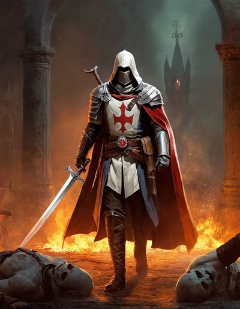

Setting Facts¶
Before moving on to the next stage of setting creation, let’s discuss Setting Facts.
A setting is largely defined by its setting facts. For something to be a True Fact about a setting someone must write it down in whatever your group chooses to use as a setting bible.
Fact Parts
A fact is made up of three parts:
- Fact:
The fact being established in the setting.
- Price:
A counterbalancing fact in the setting that balances fact that is being established.
- Player:
The player who created the fact. The player is important because they get rewarded the first few times the fact comes up in play.
Logos¶
A setting fact has a Price, and a cost in currency. The Price is the permanent countering fact, while the cost is the Logos that a player must spend to make the fact True.
A player may spend Logos at any time to establish a fact as true. Until a player spends Logos on a fact it isn’t actually true within the setting. This doesn’t mean that it’s false, just that the truth of the fact is undefined.
Narratively, it is the Demiurges that establish the facts in creation, and Demiurges are imperfect, and thus, so are their creations. This imperfection manifests itself as the Price.
The Price is another associated fact with a similar scope that generally balances the created fact. If the fact gave powers to vampires, the Price will strengthen, or create the Templars that hunt them.
Some sample facts:
|
|
Breadth of Facts¶
Setting facts are best if they are narrowly defined, so there is a limit on how broad a fact may be.
Facts should be limited to a single distinct quality or description about a single group or entity. The exact breadth of facts the players around the table are comfortable with will become clear early on in the game.
When a fact whisks a noun into existence, it is often done implicitly, with the first quality. The fact, “Mages cast spells”, implicitly creates mages and the existence of magic. It is possible to explicitly create mages, “Mages exist.”, but it isn’t necessary or even desirable.
Generally, facts shouldn’t have conjunctions. Look very closely at facts containing and, yet, or, so, but, for or nor. Are they really a single fact, or should they really be considered two or more facts costing additional Logos and incurring additional Prices?
A fact can’t remove something that has already been established by previous fact or fiction. A character can’t spend a Logos and remove the mage’s guild that had been established earlier, but they may create a new ally or vulnerability of the guild.
{kind=link}
Price¶
When a Demiurge expends Logos to reorder Creation, Creation becomes unbalanced. Unintended facts are introduced into Creation in order to stabilize it.
The Prices always work counter to the interests to the entity that benefited from the original fact. Prices can be organizations that work at cross purposes or a related weakness or vulnerability.
Creating an Order of Paladins dedicated to Law and Order may have a Price of the existence of an organized crime syndicate or corruption in the leadership of the paladins. Generally it will be something the bolsters Chaos and Corruption.
The Demiurge of a vampire Hero spends Logos, to establish that vampires are tough as nails. In order to balance creation, a Price such as ‘Templars are dedicated to killing all vampires’, ‘vampires must suck blood nightly’, ‘vampires can’t function in sunlight’ or ‘vampires are vulnerable to silver’ is added to creation.
Example Prices
- The police are corrupt:
There is a robust community of vigilantes.
- Fallen Angels can craft Relics from collected souls:
The ethics and morality of the souls influence how the Relics behave.
- The Mages Guild is benevolent:
They are opposed by freelance mages out for personal power.
The Price should never invalidate the fact. It should either be orthogonal to the fact or a Yes, and… sort of response to the fact that adds complexity to it.
Balancing Scopes¶
One thing to watch for is to ensure that the scopes of the fact and the Price are matched. It is fine to have large vague facts, but they should be matched with equally large Prices.
A fact creating all the vampire’s traditional weaknesses, must also have an equally broad Price, encompassing many powers, maybe all the traditional vampire powers.
What are traditional powers and weaknesses are left for the individual table to decide, and is why narrow facts are often preferred.
Setting The Price¶
Any player can and should suggest Prices, but ultimately only one player gets to decide.
If the campaign fact is created by a player Demiurge, the GM gets to be the final arbiter of the Price.
If the Demiurge that creates the fact is controlled by the GM, each player rolls a die, and the highest number gets to decide on the first Price for the session.
The responsibility moves clockwise around the table for the remainder of the session.
The Demiurge spending the Logos, can refuse to pay the Price, and the fact isn’t established. Generally the players should all work together to find a Price that can be paid.
This is a cooperative game where everyone is trying to create an engaging and interesting story together, so like any situation, the Price is a negotiation with the goal of both sides to create the most interesting world to play in.
Reward¶
The first three (3) times a Campaign Fact is used, the Hero of the Demiurge that created the fact, gains a point of Favor.
This is only for facts created by player Demiurges, not for the Price associated with those facts.
After receiving three favor for a given fact, the Demiurge receives a point of Logos and the Hero no longer gains Favor when the fact appears in the game.
GM Facts¶
The players aren’t the only Demiurges with their fingers in Creation. The GM has a pool of Logos they can spend to modify Creation just as a Demiurge would.
The GM has 2 Logos per player to use each session, though the GM is encouraged to use the Prices for player facts to establish what they would like.
Assumed Facts¶
After the game has been going on for a few sessions, the group may realize that they all have been acting like some fact has been established, though in fact it has not.
The GM can either clarify that it has not been established, and thus someone could create a counter-fact, or write it down with the list of facts and move on.
It’s usually not necessary to establish that gravity exists in most campaigns, and most GMs would take it as an assumed fact along with causality and all the usual laws of physics, unless someone tried to pay Logos and establish that it doesn’t.
The sorts of facts that break play expectations about the usual laws of physics, should probably be brought up during the pitch session not several sessions into the game.